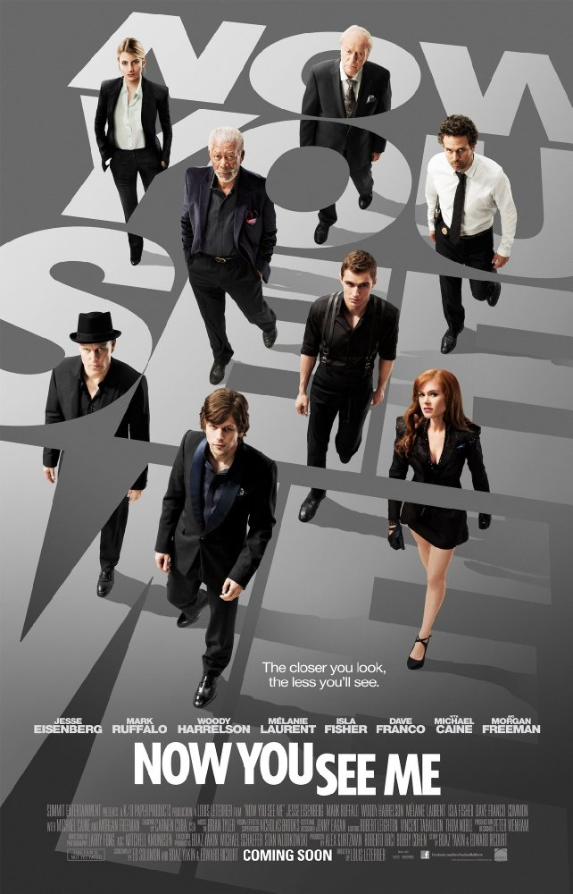
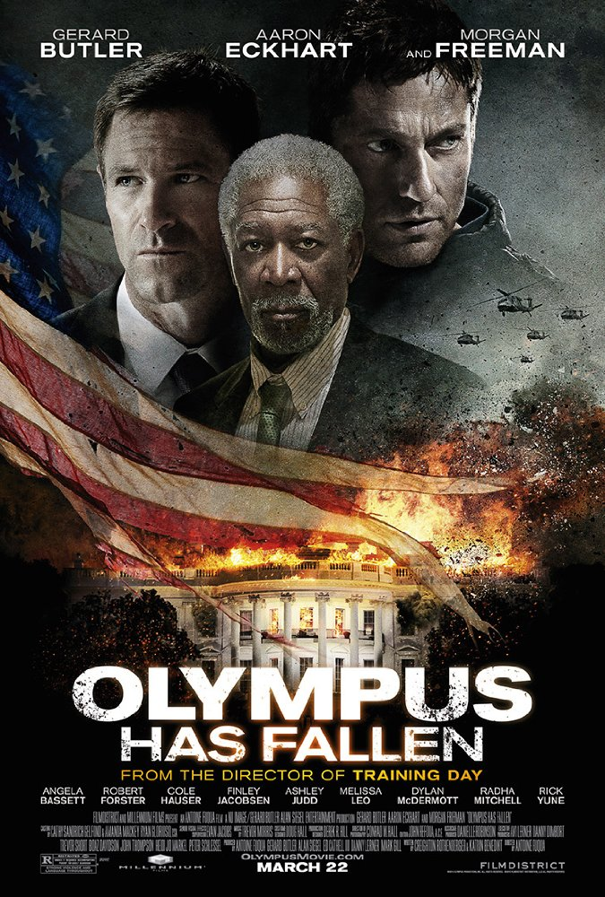

Genres: Adventure | Drama | Sci-Fi
Production Co: Paramount Pictures, Warner Bros., Legendary Entertainment
Certificate: 12+
Director: Christopher Nolan
Writers: Jonathan Nolan, Christopher Nolan
Stars: Matthew McConaughey, Anne Hathaway, Jessica Chastain
Release date: 6 November 2014 (Russia)
Budget: $165 000 000 (estimated)
Storyline:
A team of explorers travel through a wormhole in space in an attempt to ensure humanity's survival...
Earth's future has been riddled by disasters, famines, and droughts. There is only one way to ensure mankind's survival:
Interstellar travel. A newly discovered wormhole in the far reaches of our solar system allows a team of astronauts to go
where no man has gone before, a planet that may have the right environment to sustain human life.
Written by Warner Bros.
Original language: English
Duration: 2h 49min
Country: USA | UK

Genres: Adventure | Drama | Sci-Fi
Production Co: Twentieth Century Fox Film Corporation, TSG Entertainment, Scott Free Productions
Certificate: 16+
Director: Ridley Scott
Writers: Drew Goddard (screenplay), Andy Weir (book)
Stars: Matt Damon, Jessica Chastain, Kristen Wiig
Release date: 8 October 2015 (Russia)
Budget: $108 000 000 (estimated)
Storyline: During a manned mission to Mars, Astronaut Mark Watney is presumed dead after a fierce storm and left behind by his crew. But Watney has survived and finds himself stranded and alone on the hostile planet. With only meager supplies, he must draw upon his ingenuity, wit and spirit to subsist and find a way to signal to Earth that he is alive. Millions of miles away, NASA and a team of international scientists work tirelessly to bring "the Martian" home, while his crewmates concurrently plot a daring, if not impossible, rescue mission. As these stories of incredible bravery unfold, the world comes together to root for Watney's safe return.
Original language: English
Duration: 2h 24min
Country: USA | UK

Genres: Crime | Mystery | Thriller
Production Co: Summit Entertainment, K/O Paper Products, SOIXAN7E QUIN5E
Certificate: 12+
Director: Louis Leterrier
Writers: Ed Solomon (screenplay), Boaz Yakin (screenplay)
Stars: Jesse Eisenberg, Common, Mark Ruffalo
Release date: 6 June 2013 (Russia)
Budget: $75 000 000 (estimated)
Storyline: Four magicians each answer a mysterious summons to an obscure address with secrets inside. A year later, they are the Four Horsemen, big time stage illusionists who climax their sold out Las Vegas show with a bank apparently robbed for real. This puts agents Dylan Rhodes of the FBI and Alma Dray of Interpol on the case to find out how they did it. However, this mystery proves difficult to solve even with the insights of the professional illusion exposer, Thaddeus Bradley. What follows is a bizarre investigation where nothing is what it seems with illusions, dark secrets and hidden agendas galore as all involved are reminded of a great truth in this puzzle: the closer you look, the less you see.
Original language: English | French
Duration: 1h 55min
Country: USA | France

Genres: Action | Thriller
Production Co: Millennium Films, Nu Image / Millennium Films, Gerard Butler Alan Siegel Entertainment
Certificate: 12+
Director: Antoine Fuqua
Writers: Creighton Rothenberger, Katrin Benedikt
Stars: Gerard Butler, Aaron Eckhart, Morgan Freeman
Release date: 4 April 2013 (Russia)
Budget: $70 000 000 (estimated)
Storyline: When the White House (Secret Service Code: "Olympus") is captured by a terrorist mastermind and the President is kidnapped, disgraced former Presidential Secret Service Agent Mike Banning finds himself trapped within the building. As our national security team scrambles to respond, they are forced to rely on Banning's inside knowledge to help retake the White House, save the President and avert an even bigger disaster.
Original language: English | Korean
Duration: 1h 59min
Country: USA